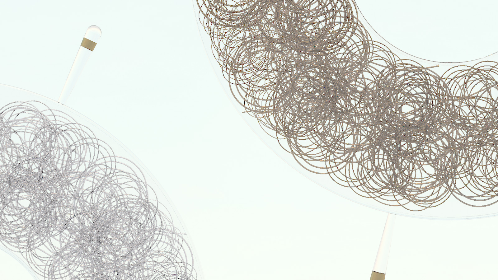
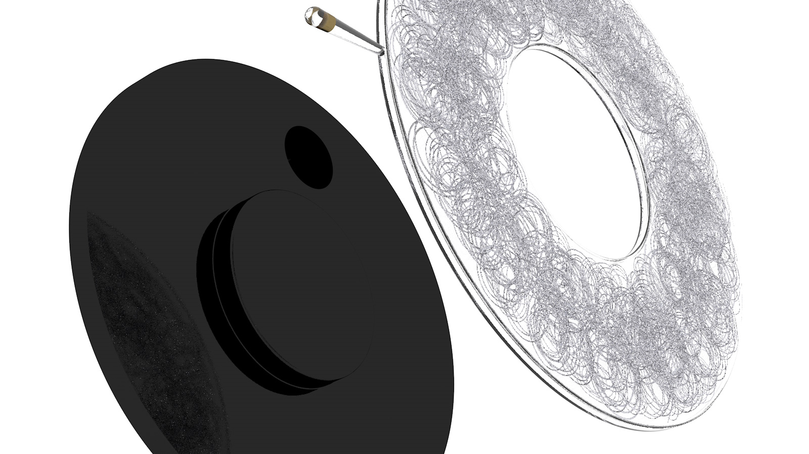
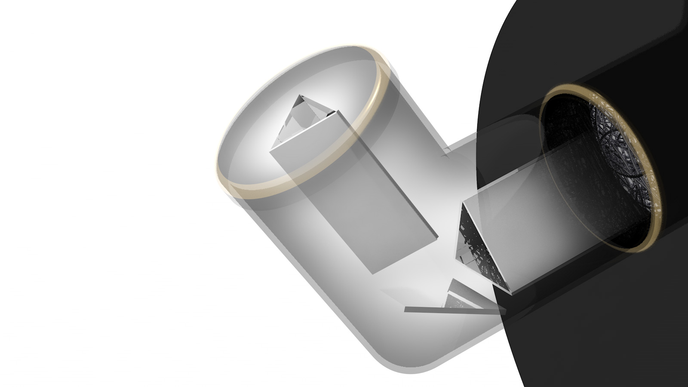
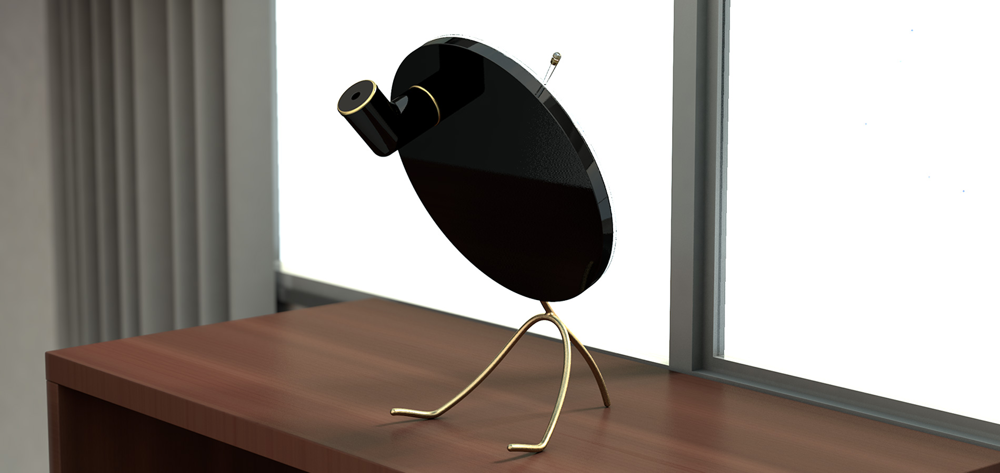
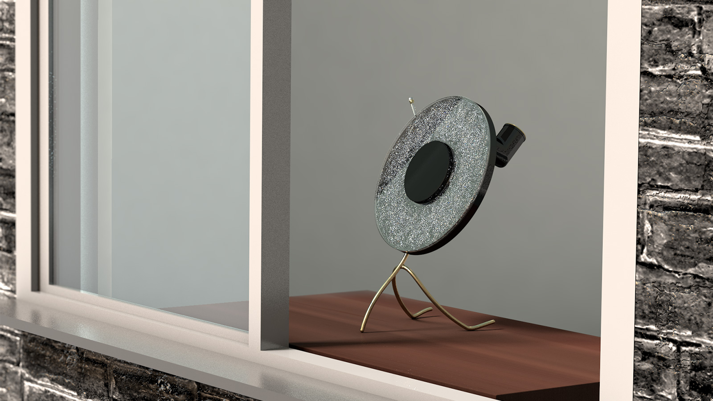

制作背景
時間の可視化から定めたテーマとして私は「時間が生み出す美しさ」に着目した。人や物は有限であることに加え、劣化したモノは時に醜さへと変わり、関係性において一線を引く。鉄という素材もまた潤沢であった所から段階を踏んで輝きを失う。しかし時間をなぞるとサビのもつ表情には様々に作り出される無機質な造形に魅力を感じる。そこで私は儚い希薄な存在から詩的に可憐を味わうわびさびの美学を目指し、華を生けるように万華鏡を重ねる事で美しさと醜さの垣根を超えた彫刻を制作した。徐々にサビていく表情との対話が当事者の距離を近づけ、美しさを自らの体験で得る事ができるプロダクトになった。